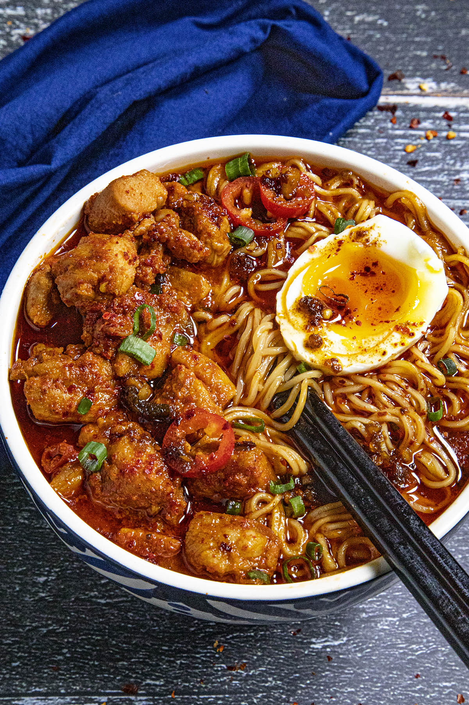

Ramen

Description
If you're a spicy food lover, you've likely seen Buldak Ramen exploding in popularity. It's everywhere now, available in stores and online.
Buldak ramen is actually the invention of South Korean company, Samyang Foods, based on the popular Korean street food, Buldak.
Buldak translates to "fire chicken", and is a fiery dish of chicken cooked in a spicy gochujang sauce. Inspired by the popularity of the dish, Samyang created this ramen instant noodles version called "Fire Chicken Stir Fried Noodes", or "buldak-bokkeum-myeon".
Samyang offers a variety of flavors. This is my own homemade buldak ramen, which makes it extra spicy with lots of Korean gochujang, a fermented Korean chili paste, and gochugaru, Korean chili flakes, among other spicy ingredients.
Ingredients
- For the Chicken
- GOchujang
- GOchugaru
- Soy sauce
- Sesame Oil
- Corn Syrup
- Garlic and Ginger
- For the Ramen
- Chicken Broth
- Garlic and GInger
- GOchujang
- Soy sauce
- Chili-Garlic Sauce
- Rice Wine Vinegar
- Hot Sauce
- Ramen Noodles
Steps
- In a large bowl, mix together the gochujang, gochugaru, soy sauce, sesame oil, corn syrup, garlic and ginger. Add the chicken and mix to coat.
- Heat the vegetable oil in a large pan to medium-high heat. Add the chicken and cook 5-6 minutes, or until the chicken is cooked through. Set aside.
- Heat the chicken broth in a large pot to medium heat.
- Swirl in the garlic, ginger, gochujang, chili crisp, soy sauce, chili-garlic sauce, vinegar, and hot sauce to taste. Stir until the ingredients are all mixed through. Bring to a boil.
- Add the noodles and cook until the noodles are softened, 3-4 minutes.
- Distribute the noodles and ramen broth to 2 bowls. Spoon on the spicy chicken (buldak), then garnish with half a soft-boiled egg, chopped green onion, sliced hot peppers, chili flakes. Drizzle on chili crisp and serve.
- Boom! Done! Your buldak ramen noodles are ready to serve. Nice and spicy, isn't it? Who doesn't love a big bowl of spicy ramen noodles!